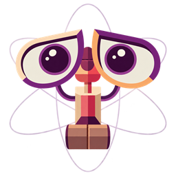
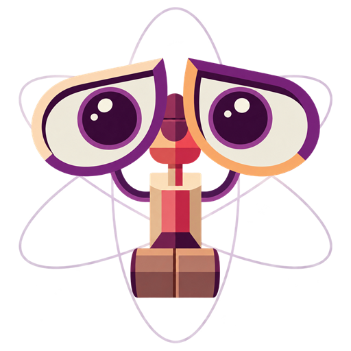
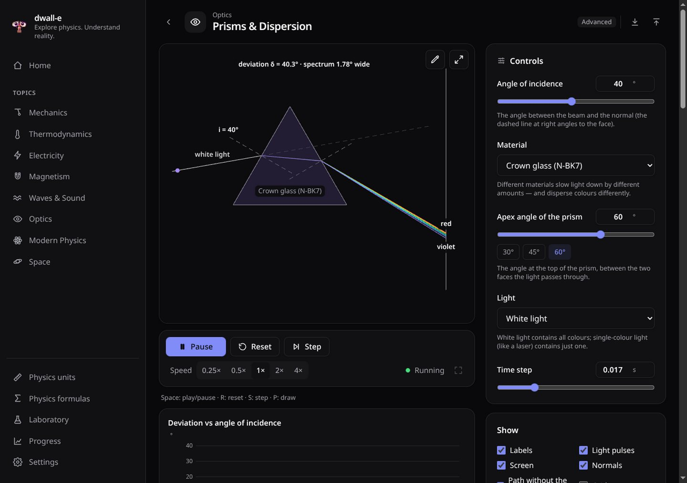
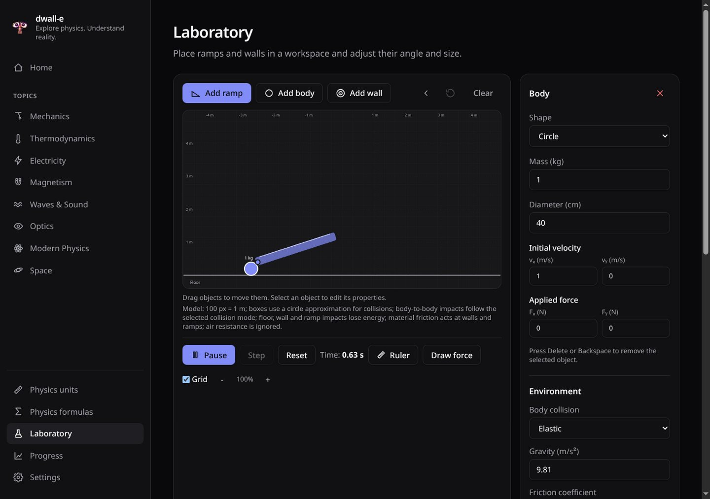
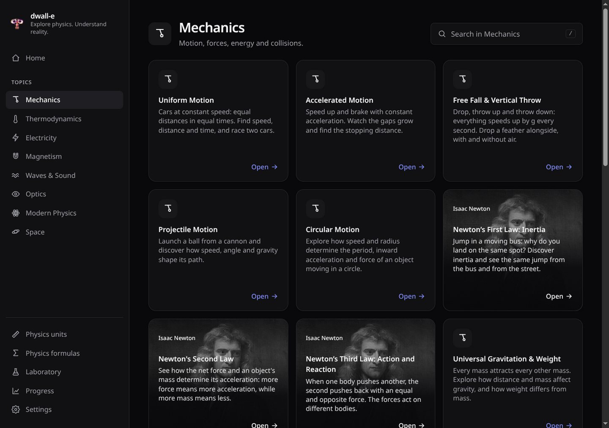
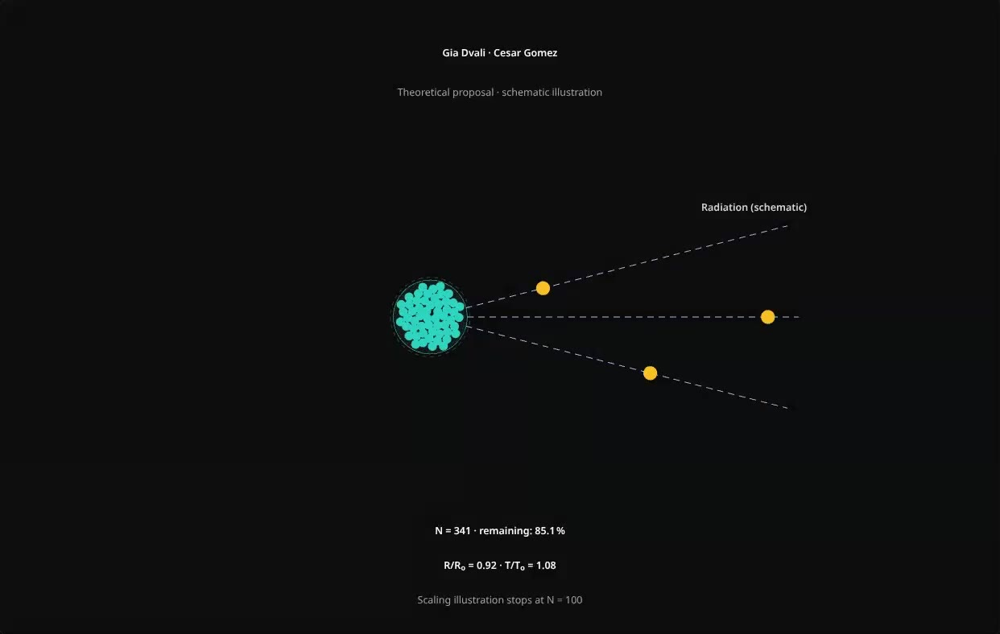
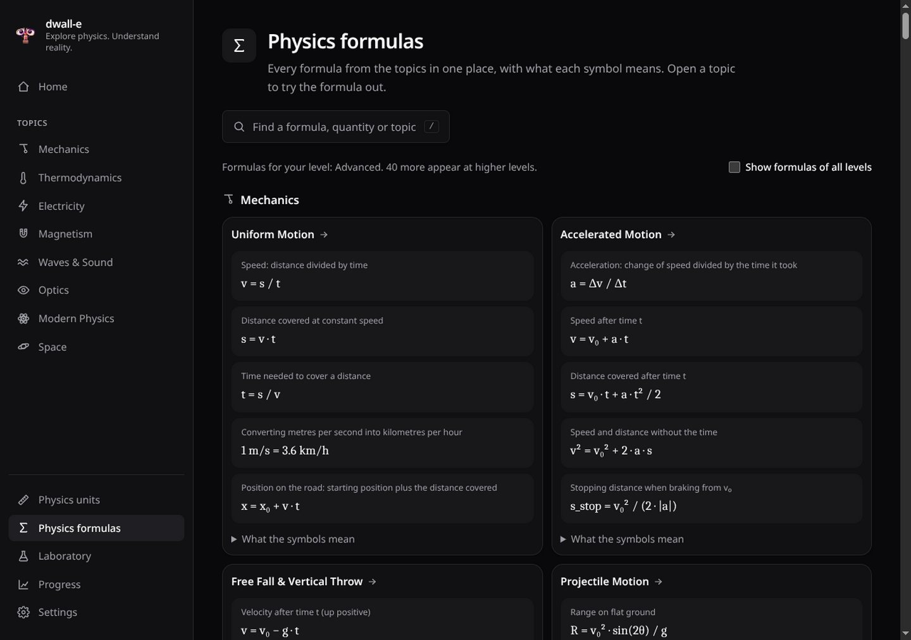

Beginner
Few controls, big pictures, no heavy maths.

dwall-e
Explore physics. Understand reality.
An interactive physics lab for school students: change the values, watch what happens, understand why.
How students learn here
Angle, mass, voltage, wavelength — every topic has sliders, presets and switches.
Animations follow the real equations step by step, with vectors, labels and live readings.
Theory, formulas and challenges explain what you saw — and what was simplified.
From Newton to the Higgs boson
Real recordings from the app. Click a video to watch it large.

One template for every topic
Free experiment
Beyond the ready-made topics there is an empty workspace: build an experiment yourself and see whether it behaves as you expected.

Ages 10 to 18
The same topic grows with the student: more controls, readings, graphs and formulas at every level.
Few controls, big pictures, no heavy maths.
More variables, formulas and live values.
Vectors, components, graphs and precise settings.
Full control for teachers and curious minds.
The whole course

The people behind the laws
Topic cards carry the portraits of the scientists who discovered the laws: Archimedes, Newton, Kepler, Coulomb, Doppler, Rutherford, Higgs, Andronikashvili, Dvali and others. Students see that every formula has a person and a story behind it.
Georgian science
Elephter Andronikashvili, born in Tbilisi, measured the superfluid fraction of liquid helium with a stack of rotating discs. In dwall-e students repeat his experiment and see why the pendulum swings faster below 2.17 K.
Topics that matter beyond the school course are marked "Important" in the app.

Georgian science · new
Georgian physicist Gia Dvali and Cesar Gomez described a black hole as a large collection of quanta. In dwall-e students watch it radiate: as the number of quanta falls, the black hole shrinks and grows hotter.
The app clearly marks this as a theoretical proposal, not yet confirmed by experiment.

Always at hand
All formulas from all topics in one searchable place, with the meaning of every symbol — filtered for the student's level. Next to them: a guide to every unit, from the metre to the electronvolt.
Made for classrooms
Every model is checked against analytic results by more than a thousand automated tests.
No internet and no account needed. Progress stays on the computer.
Every text, label and formula description in both languages.
From Galileo to gravitational waves, the Higgs boson and Artemis — with current data.
For students, teachers and schools — on Windows, macOS and Linux.
Light and dark themes, adjustable text size, information never shown by colour alone.
The links always download the latest version.
dwall-e-Setup.exe
WindowsDownload demo · Portable, no installationdwall-e-Portable.exe
macOSDownload demo · Intel and Apple Silicondwall-e-mac.dmg
LinuxDownload demo · x64 AppImagedwall-e-linux.AppImage
info@dwall-e.ge · dwall-e · Explore physics. Understand reality.